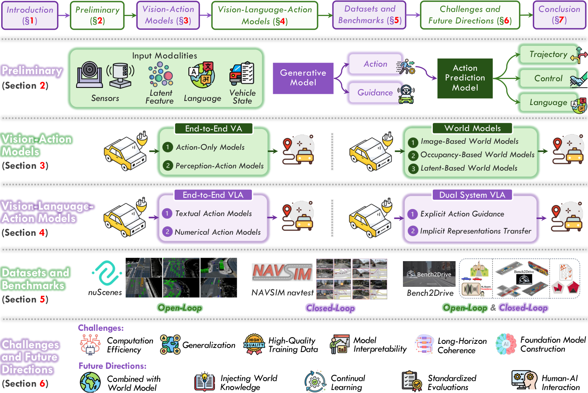
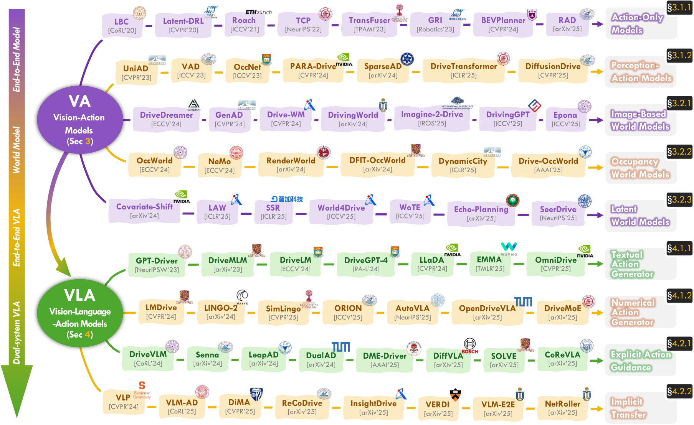
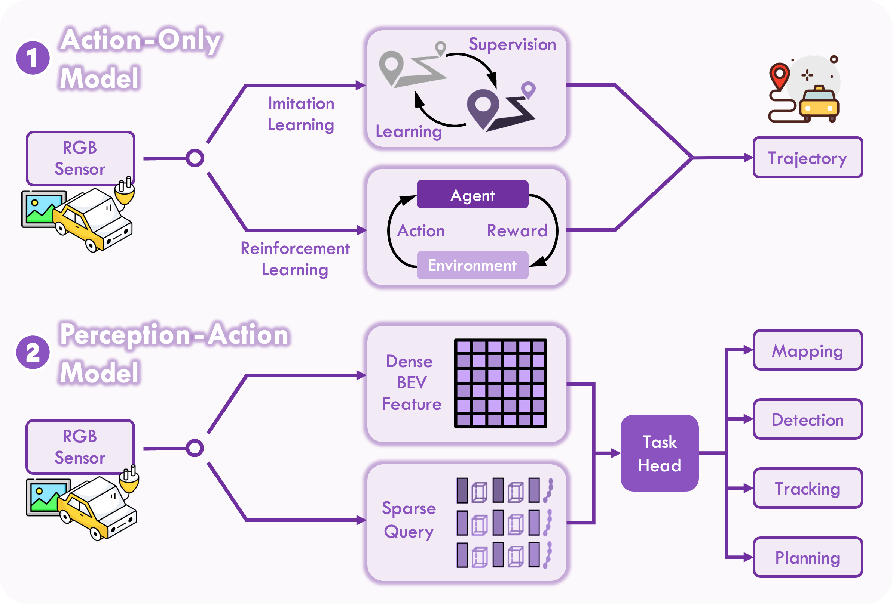
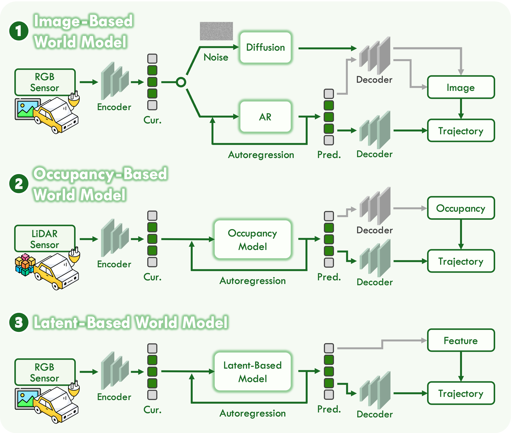
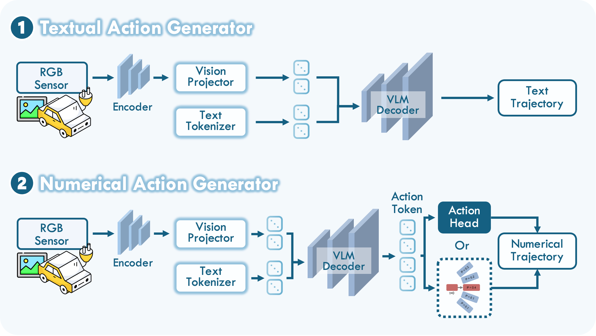
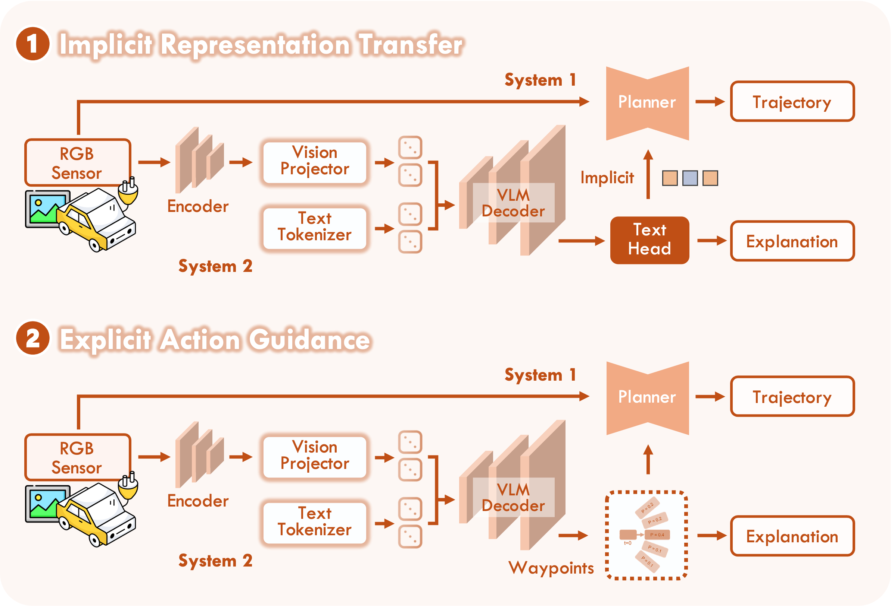
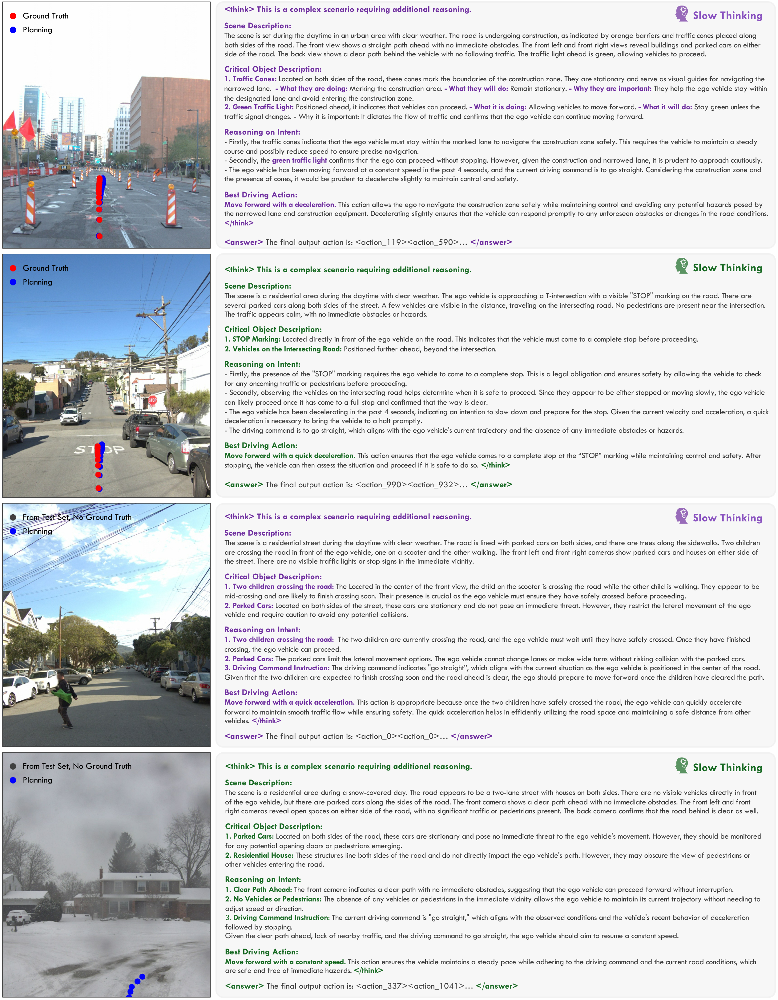

Vision-Language-Action Models for Autonomous Driving: Past, Present, and Future
这篇综述试图为自驾 VLA 建立一套可操作的“设计坐标系”：先把系统拆成输入、VLM 骨干和动作头，再沿着 VA、世界模型、端到端 VLA、双系统 VLA 四条路线解释语言究竟如何进入驾驶闭环。它真正有价值的地方，不是罗列方法，而是帮助我们判断不同论文解决的是语义理解、动作接口、实时执行还是安全验证中的哪一层问题。
论文速览：它不是“又一篇方法表”，而是一张系统设计地图
a_t = H(F(x|θ)) 为入口，把自驾 VLA 的差异压缩为三类关键选择：输入 x 如何组织、VLM 骨干 F 在闭环中承担什么角色、动作头 H 如何把语义推理变成可执行动作；随后用端到端与双系统两大范式组织现有工作，并把数据、指标和部署挑战接回同一条证据链。这篇综述回答什么
它回答的不是“哪一个模型最好”，而是：当语言进入自动驾驶后，模型应当直接生成动作、只生成高层指导，还是只在训练期迁移语义先验？不同选择如何改变实时性、可解释性、几何精度和安全责任。
推荐阅读顺序
先看总览图和时间线，获得 VA→VLA 演进直觉；再看端到端 VLA 与双系统 VLA 两张分类图；最后读数据/评测与挑战章节，检查“推理更强”是否真的转化成闭环安全收益。

证据边界：这是作者提出的组织框架，不是实验证明的唯一正确分类；部分方法横跨多个类别，实际系统也可能在训练和部署阶段采用不同范式。
研究问题与动机：语义理解如何真正进入安全关键闭环？
传统模块化自动驾驶通过感知、预测、规划、控制的显式接口保证工程可诊断性，但每个中间接口也会丢失信息并传播误差。早期 Vision-Action 模型试图直接从视觉映射到动作，减少手工接口，却常在长尾、分布偏移和因果混淆下失效。VLA 的吸引力来自大型 VLM 的开放词汇理解、世界知识和语言推理能力：它可能识别非常规道路事件、理解人类指令、生成决策理由，并对未见场景形成更丰富的语义表征。
但“看懂场景”与“安全驾驶”之间没有自动等号。自驾动作是连续、低延迟、受物理约束的；语言模型输出则是离散、自回归、可能幻觉且计算昂贵的。综述真正围绕的矛盾是：如何保留 VLM 的语义与推理收益，同时避免它在数值精度、实时性和安全验证上的弱点进入执行链路。
瓶颈 A：语义到连续动作的落差
“前方施工，应谨慎并线”是合理语言判断，但控制器需要在几十毫秒内产生带曲率、速度和碰撞约束的轨迹。动作表示与动作头决定了这一落差如何被填平。
瓶颈 B：解释不等于因果依据
模型能输出流畅的 Chain-of-Thought，并不意味着该文本忠实反映了动作产生机制。一个系统可能给出正确动作与错误理由，也可能用合理理由包装危险动作。
瓶颈 C：实时执行与慢推理冲突
多相机高分辨率输入会产生大量视觉 token；大 VLM 的自回归推理难满足安全关键系统常期待的亚 50ms 级延迟。双系统和隐式迁移正是对这个冲突的不同回答。
瓶颈 D：现有指标测不到 VLA 风险
L2、碰撞率和路线完成度能测轨迹，却难测指令误解、跨模态不一致和幻觉；BLEU、CIDEr 又能测文本相似度，却无法说明执行是否安全。
统一问题公式：把复杂系统压缩为输入、骨干与动作头
x 是时刻 t 的多模态输入；F 是参数为 θ 的 VLM 骨干，负责跨模态融合和推理；H 是动作生成头，把隐表示转为语言、轨迹或低层控制。这个公式看起来简单，却是理解整篇综述的钥匙：多数“新范式”都可解释为重写 x、F 或 H 中的一项，或者改变 F 与 H 在训练/部署时的耦合方式。
输入 x：不是只有相机图像
| 输入族 | 典型形式 | 提供的信息 | 主要代价/风险 |
|---|---|---|---|
| 传感器观测 | 环视 RGB、LiDAR 点云 | 语义纹理与精确 3D 几何 | 多视角 token 长、跨传感器标定复杂 |
| 空间中间表示 | BEV、3D occupancy | 把场景变成规划友好的统一坐标 | 构建成本高，可能继承上游感知误差 |
| 语言条件 | 导航指令、偏好、问答、理由 | 任务目标、开放词汇语义、人机交互 | 含糊、冲突、恶意或不安全指令 |
| 车辆状态 | 速度、加速度、转角、yaw rate | 闭环动力学上下文 | 单纯拼接不足以保证动态可行性 |
动作头 H：系统最终“会不会开”的关键接口
| 动作头 | 生成机制 | 优势 | 关键问题 |
|---|---|---|---|
| Language Head | 自回归生成元动作或离散动作 token | 复用 VLM 原生能力、可读 | 量化误差、序列延迟、文本到执行转换 |
| Regression | MLP/GRU 直接回归轨迹或控制量 | 连续、直接、延迟低 | 多模态未来被压成单解，解释性较弱 |
| Selection | 对候选可行轨迹打分并选择 | 易加入动力学与安全约束 | 性能受候选集覆盖率上限限制 |
| Generation | 扩散或 VAE 生成多模态轨迹 | 表达不确定性与多种未来 | 迭代采样成本与实时性冲突 |
从 VA 到 VLA：技术演进不是简单地“加一个 LLM”

证据边界：时间线能说明研究主题和代表作的出现顺序，却不能证明后出现的方法更强；不同论文使用不同数据、指标与闭环条件，不能仅凭图上位置做性能排序。
VA 的两条主线
端到端 VA 直接学习传感器到动作的映射。Action-only 模型依赖模仿学习或强化学习，结构简洁但容易遭遇分布偏移和因果混淆；Perception-action 模型加入检测、地图、跟踪、BEV 或 sparse query 等辅助任务，让规划获得更明确的空间结构。世界模型则把问题从“直接给动作”改成“预测不同动作下世界如何演化”，按输出可分为像素、occupancy 和 latent 三类。

它支撑的结论：“端到端”并不等于没有中间结构；当前强方法往往仍借助可解释的空间表征和多任务监督。
不能证明什么：图没有比较两类在同一算力和数据下的优劣，也不能说明辅助感知一定带来闭环收益。

它支撑的结论：世界模型的核心选择不是生成器类型，而是“未来以什么表征被预测和检查”。
证据边界：分类图不意味着三类互斥，混合像素、occupancy 与 latent 的统一模型正是作者提出的未来方向。
VLA 分类详解：端到端与双系统是在分配“思考权”和“执行权”
端到端 VLA：共享模型直接生成动作
端到端 VLA 将感知、语言推理与动作生成尽量统一在一个模型中。综述按输出形式再分成 textual action generator 与 numerical action generator。前者让驾驶决策或轨迹以语言 token 输出，天然可读但面临连续控制精度问题；后者在 VLM 上附加动作头或动作 token，使输出更适合 planner 和控制器，但可能牺牲部分可解释性并需要更多动作监督。

它支撑的结论：端到端 VLA 的主要分歧集中在语言隐空间如何跨到物理动作空间。
证据边界：输出更数值化不自动意味着更安全；动作头仍可能缺少动力学约束，文本动作也可经可靠 planner 转换为安全轨迹。
| 端到端路线 | 代表接口 | 主要收益 | 主要风险 |
|---|---|---|---|
| 文本元动作 | “减速”“向左变道” | 语义明确、可接模块化 planner | 抽象粒度粗，错误指令会向下传播 |
| 文本化 waypoint | 坐标序列作为 token | 统一推理和规划序列 | token 量化与数值精度问题 |
| 额外数值动作头 | MLP/GRU/扩散头 | 直接兼容轨迹与控制 | 共享骨干是否真正服务动作难验证 |
| 额外动作 token | 轨迹 codebook | 复用自回归训练与推理 | 码本覆盖、量化误差和生成延迟 |
双系统 VLA：VLM 慢思考，专用驾驶模块快执行
双系统范式接受一个工程现实：大型 VLM 擅长语义和长尾理解，但专用 planner 更擅长低延迟、几何精度和安全约束。于是系统把决策权拆分：VLM 生成显式元动作/粗 waypoint，或在训练期与特征层向快系统迁移知识；快系统持续承担高频轨迹与控制。该路线通常更易落地，但也让“语言推理到底贡献了多少”变得更难归因。

它支撑的结论：双系统不是折衷式拼接，而是围绕延迟、可解释性和安全接口进行职责分配。
证据边界：图没有解决两个系统意见冲突时谁拥有最终控制权，也未给出 VLM 不确定性如何触发 fallback 的统一机制。
| 交互方式 | VLM 在线角色 | 可审计性 | 部署代价 | 典型失败 |
|---|---|---|---|---|
| 显式 meta-action | 生成高层动作先验 | 高 | 需要在线 VLM | 语义歧义或错误指令污染 planner |
| 显式 waypoint | 生成粗轨迹供精修 | 中高 | 需要在线 VLM | 粗轨迹不满足动态/碰撞约束 |
| 知识蒸馏 | 仅训练期教师 | 低 | 部署最轻 | 复杂推理被压缩丢失 |
| 特征融合 | 提供异步或低频语义特征 | 中低 | 取决于缓存和异步策略 | 过期语义与当前场景错位 |
数据与评测：VLA 的核心短板不是数据量，而是三模态对齐和指标错位
传统 VA 数据集提供视觉、LiDAR、地图和专家轨迹，适合训练 perception-to-action；VLA 数据集还必须把语言与视觉时刻、动作意图或未来轨迹对齐。论文列出的 VLA 数据表显示，当前语言标注主要由 caption、instruction、QA、reasoning 和 decision 构成，且自动标注占比快速上升。这提高了规模，却也可能把上游模型的偏见和幻觉写进训练集。
| 数据层级 | 代表数据 | 适合研究 | 关键缺口 |
|---|---|---|---|
| VA 真实驾驶日志 | BDD100K、nuScenes、Waymo、nuPlan、Argoverse 2 | 感知、轨迹、闭环规划基础 | 缺少语言监督，无法直接测指令与理由 |
| 解释/问答型 VLA | BDD-X、DriveLM、LingoQA、Reason2Drive | 场景理解、理由生成、条件推理 | QA 正确不等于动作可执行 |
| 指令/动作型 VLA | LMDrive、SUP-AD、CoVLA、ImpromptuVLA | 语言条件轨迹与闭环行为 | 人工成本高，指令覆盖与安全冲突有限 |
| 长尾/人类偏好评测 | WOD-E2E、Bench2Drive、NAVSIM | 安全关键场景、闭环与偏好 | 仍缺少统一的指令忠实度与幻觉指标 |
三个评测空间不能互相替代
| 评测空间 | 典型指标 | 能回答的问题 | 不能回答的问题 |
|---|---|---|---|
| 轨迹开环 | L2、ADE、FDE、Collision Rate、RFS | 预测与专家/偏好轨迹的接近程度 | 执行后是否能恢复误差、长期是否安全 |
| 轨迹闭环 | RC、DS、NC、TTC、PDMS、Success Rate | 交互环境中的完成度、安全、舒适与进度 | 语言理由是否真实、指令是否被正确理解 |
| 文本/推理 | BLEU、CIDEr、ROUGE、Top-1、人工偏好 | 语言与参考答案的相似度或任务正确率 | 动作是否安全、解释是否因果忠实 |
综述汇总结果应如何读
在 nuScenes 开环规划中，综述指出语言增强方法可取得更低 L2 和碰撞率，例如 Drive-R1 报告约 0.31m L2 与 0.09 碰撞率；但跨论文设置并不完全一致。WOD-E2E 通过 Rater Feedback Score 引入人类偏好，补充了“模仿日志轨迹就是最优”的假设。NAVSIM 的 PDMS 将安全、进度和舒适组合起来，能区分只会保守停车与真正有效前进的模型。Bench2Drive 则强调 CARLA V2 闭环长程任务，SimLingo 等语言条件方法展示了较强 Driving Score。
论文图解与证据链：分类框架怎样连接到真实场景？

它支撑的结论：VLA 可以在同一输出中呈现场景理解、决策理由和规划结果，便于人类检查跨模态一致性。
不能证明什么：单个成功案例不能证明解释是动作的因果来源，也不能证明在长尾、传感器噪声或多步闭环中保持稳定。
| 原论文图/表 | 它在证据链中的作用 | 读完后仍需追问 |
|---|---|---|
| 总览图 | 定义全文路线：基础构件→VA→VLA→评测→未来 | 分类是否覆盖训练/部署阶段的混合系统？ |
| 时间线 | 显示 VLA 吸收 VA、世界模型和语言推理的并行演进 | 后出现的方法是否在统一基准上更强？ |
| Figure 3 / 4 | 解释 VA 与世界模型的结构基础 | 哪种表征最适合可验证的闭环安全？ |
| Figure 5 / 6 | 定义端到端 VLA 与双系统 VLA 的主要接口 | 谁拥有最终控制权，如何处理冲突与不确定性？ |
| 数据与指标表 | 说明语言监督与动作评测仍高度碎片化 | 如何同时测指令忠实、解释忠实和闭环安全？ |
| WOD-E2E 案例 | 展示推理、场景和轨迹的可视化关联 | 理由是否因果真实，失败案例与统计覆盖在哪里？ |
挑战、局限与边界：真正难的是把“会说”变成“可信执行”
模型与系统效率
多视角高分辨率输入造成长视觉 token，VLM 又引入大规模自回归计算。作者明确指出，安全关键部署期待的亚 50ms 推理仍未实现。通用 VLM 也缺乏驾驶专用的物理、交通规则与多传感器先验，单靠通用预训练难覆盖精确空间推理。
数据与泛化
视觉语言先验可能帮助识别长尾场景，但从语义理解对齐到动作空间会引入新的不确定性。高质量 vision-language-action 三元组昂贵，合成数据又存在光照、噪声和交通参与者行为上的 sim-to-real 差距。更大的数据集不能自动解决动作监督质量、危险指令与区域驾驶习惯差异。
可信性与时间一致性
语言解释是生成产物，不一定忠实反映动作因果。模型可能给出自信但错误的理由；有限上下文与短时条件又会导致长程驾驶中的状态遗忘和决策摇摆。对于自动驾驶，这不是“文本质量下降”，而是可能造成不可预测动作的系统风险。
未来方向的三条主线
统一 Vision-Language-World Model
让系统在执行动作前模拟候选未来，把语言目标、视觉状态与动态预测连起来。难点是 rollout 的物理可信度和长程误差积累。
更紧密的多传感器融合
用 LiDAR、Radar、event camera、HD map 补足 VLM 的几何弱点，让语义解释与可验证空间结构同时存在。
持续与车载学习
适应道路变化与地区习惯，同时避免灾难性遗忘和未经验证的在线更新进入安全闭环。
安全部署生态
建立能测指令歧义、推理失败、跨模态不一致与幻觉的基准，并将经验评测与形式验证、fallback 和责任边界结合。
复现与使用要点：这篇综述最适合拿来搭研究地图和评测矩阵
综述本身不是训练方法，因此“复现”更准确地说是复核其分类、表格和比较结论。作者公开了项目页、Awesome List 和 HuggingFace Leaderboard，适合持续追踪方法与基准。若要把它用于自己的研究，建议先给目标论文标注五个字段：输入模态、VLM 在线角色、动作表示、动作头、评测闭环程度；再判断语言贡献是否通过同等数据/算力的消融得到验证。
| 复核任务 | 具体检查 | 常见阻塞 |
|---|---|---|
| 分类复核 | 检查方法在训练期与部署期是否属于不同类别 | 论文常用“end-to-end”泛称掩盖外部 planner |
| 结果复核 | 核对输入模态、数据规模、模型规模、评测 split 与指标定义 | 综述表格难完全容纳协议差异 |
| 语言收益复核 | 寻找 w/o language、w/o CoT、等算力基线和闭环消融 | 额外预训练和数据通常与语言模块耦合 |
| 安全复核 | 检查长尾、错误指令、模态冲突、延迟和 fallback | 多数公开基准仍缺少这些维度 |
适合从综述衍生的研究实验
- 在统一 planner 上比较显式 meta-action、隐式特征融合与无语言基线，隔离语言真正贡献。
- 构建“解释正确但动作错误 / 动作正确但解释错误”的交叉评测，测量解释忠实性而非流畅度。
- 对输入指令施加歧义、冲突和恶意扰动，检查系统是否拒绝不安全指令并触发安全 fallback。
- 将 VLA 与 occupancy/world model verifier 结合，在执行前对候选轨迹做结构化未来验证。
组会问答准备
我的阅读笔记：把 VLA 看成“动作接口设计问题”会更清楚
读完这篇综述后，最有用的心智模型不是记住几十个模型名字，而是先问三个问题：语言在系统中是条件、教师还是在线决策者？动作最终以文本、轨迹、候选选择还是控制量表达？系统用什么证据证明语义收益转化成闭环安全？这三个问题基本可以穿透大多数“统一、多模态、可解释”的宣传词。
我的推断：短期内更可信的路线可能不是让大 VLM 独占控制权，而是让它负责长尾语义、目标澄清与候选生成，再由几何/动力学 planner、world model verifier 和安全规则共同裁决。长期真正统一的 VLA，需要的不只是更大模型，而是一个能把语言目标、三维世界状态、未来动力学和安全约束放进同一可验证表示的系统。
因此，这篇综述最适合作为研究入口和表格索引：它帮助我们定位一项工作的系统角色；但做方法判断时，仍必须回到原论文，核对消融、评测协议、延迟、失败案例与真实部署条件。